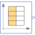
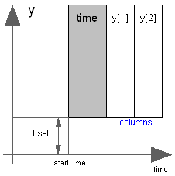

CombiTimeTableTable look-up with respect to time and linear/periodic extrapolation methods (data from matrix/file) |

|
Information
This information is part of the Modelica Standard Library maintained by the Modelica Association.
This block generates an output signal y[:] by constant, linear or cubic Hermite spline interpolation in a table. The time points and function values are stored in a matrix table[i,j], where the first column table[:,1] contains the time points and the other columns contain the data to be interpolated.

Via parameter columns it can be defined which columns of the table are interpolated. If, e.g., columns={2,4}, it is assumed that 2 output signals are present and that the first output is computed by interpolation of column 2 and the second output is computed by interpolation of column 4 of the table matrix. The table interpolation has the following properties:
- The interpolation interval is found by a binary search where the interval used in the last call is used as start interval.
- The time points need to be strictly increasing for cubic Hermite spline interpolation, otherwise monotonically increasing.
- Discontinuities are allowed for (constant or) linear interpolation, by providing the same time point twice in the table.
- Via parameter smoothness it is defined how the data is interpolated:
smoothness = 1: Linear interpolation = 2: Akima interpolation: Smooth interpolation by cubic Hermite splines such that der(y) is continuous, also if extrapolated. = 3: Constant segments = 4: Fritsch-Butland interpolation: Smooth interpolation by cubic Hermite splines such that y preserves the monotonicity and der(y) is continuous, also if extrapolated. = 5: Steffen interpolation: Smooth interpolation by cubic Hermite splines such that y preserves the monotonicity and der(y) is continuous, also if extrapolated. - Values outside of the table range, are computed by
extrapolation according to the setting of parameter extrapolation:
extrapolation = 1: Hold the first or last value of the table, if outside of the table scope. = 2: Extrapolate by using the derivative at the first/last table points if outside of the table scope. (If smoothness is LinearSegments or ConstantSegments this means to extrapolate linearly through the first/last two table points.). = 3: Periodically repeat the table data (periodical function). = 4: No extrapolation, i.e. extrapolation triggers an error - If the table has only one row, no interpolation is performed and the table values of this row are just returned.
- Via parameters shiftTime and offset the curve defined by the table can be shifted both in time and in the ordinate value. The time instants stored in the table are therefore relative to shiftTime.
- If time < startTime, no interpolation is performed and the offset is used as ordinate value for all outputs.
- The table is implemented in a numerically sound way by
generating time events at interval boundaries, in case of
interpolation by linear segments.
This generates continuously differentiable values for the integrator.
Via parameter timeEvents it is defined how the time events are generated:
timeEvents = 1: Always generate time events at interval boundaries = 2: Generate time events at discontinuities (defined by duplicated sample points) = 3: No time events at interval boundariesFor interpolation by constant segments time events are always generated at interval boundaries. For smooth interpolation by cubic Hermite splines no time events are generated at interval boundaries. - Via parameter timeScale the first column of the table array can be scaled, e.g., if the table array is given in hours (instead of seconds) timeScale shall be set to 3600.
- For special applications it is sometimes needed to know the minimum and maximum time instant defined in the table as a parameter. For this reason parameters t_min/t_minScaled and t_max/t_maxScaled are provided and can be accessed from the outside of the table object. Whereas t_min and t_max define the scaled abscissa values (using parameter timeScale) in SIunits.Time, t_minScaled and t_maxScaled define the unitless original abscissa values of the table.
Example:
table = [0, 0;
1, 0;
1, 1;
2, 4;
3, 9;
4, 16];
extrapolation = 2 (default), timeEvents = 2
If, e.g., time = 1.0, the output y = 0.0 (before event), 1.0 (after event)
e.g., time = 1.5, the output y = 2.5,
e.g., time = 2.0, the output y = 4.0,
e.g., time = 5.0, the output y = 23.0 (i.e., extrapolation via last 2 points).
The table matrix can be defined in the following ways:
- Explicitly supplied as parameter matrix "table",
and the other parameters have the following values:
tableName is "NoName" or has only blanks, fileName is "NoName" or has only blanks.
- Read from a file "fileName" where the matrix is stored as
"tableName". Both text and MATLAB MAT-file format is possible.
(The text format is described below).
The MAT-file format comes in four different versions: v4, v6, v7 and v7.3.
The library supports at least v4, v6 and v7 whereas v7.3 is optional.
It is most convenient to generate the MAT-file from FreeMat or MATLAB®
by command
save tables.mat tab1 tab2 tab3
or Scilab by commandsavematfile tables.mat tab1 tab2 tab3
when the three tables tab1, tab2, tab3 should be used from the model.
Note, a fileName can be defined as URI by using the helper function loadResource. - Statically stored in function "usertab" in file "usertab.c". The matrix is identified by "tableName". Parameter fileName = "NoName" or has only blanks. Row-wise storage is always to be preferred as otherwise the table is reallocated and transposed.
When the constant "NO_FILE_SYSTEM" is defined, all file I/O related parts of the source code are removed by the C-preprocessor, such that no access to files takes place.
If tables are read from a text file, the file needs to have the following structure ("-----" is not part of the file content):
----------------------------------------------------- #1 double tab1(6,2) # comment line 0 0 1 0 1 1 2 4 3 9 4 16 double tab2(6,2) # another comment line 0 0 2 0 2 2 4 8 6 18 8 32 -----------------------------------------------------
Note, that the first two characters in the file need to be "#1" (a line comment defining the version number of the file format). Afterwards, the corresponding matrix has to be declared with type (= "double" or "float"), name and actual dimensions. Finally, in successive rows of the file, the elements of the matrix have to be given. The elements have to be provided as a sequence of numbers in row-wise order (therefore a matrix row can span several lines in the file and need not start at the beginning of a line). Numbers have to be given according to C syntax (such as 2.3, -2, +2.e4). Number separators are spaces, tab (\t), comma (,), or semicolon (;). Several matrices may be defined one after another. Line comments start with the hash symbol (#) and can appear everywhere. Text files should either be ASCII or UTF-8 encoded, where UTF-8 encoded strings are only allowed in line comments and an optional UTF-8 BOM at the start of the text file is ignored. Other characters, like trailing non comments, are not allowed in the file.
MATLAB is a registered trademark of The MathWorks, Inc.
Parameters (19)
| nout |
Value: max([size(columns, 1); size(offset, 1)]) Type: Integer Description: Number of outputs |
|---|---|
| tableOnFile |
Value: false Type: Boolean Description: = true, if table is defined on file or in function usertab |
| table |
Value: fill(0.0, 0, 2) Type: Real[:,:] Description: Table matrix (time = first column; e.g., table=[0, 0; 1, 1; 2, 4]) |
| tableName |
Value: "NoName" Type: String Description: Table name on file or in function usertab (see docu) |
| fileName |
Value: "NoName" Type: String Description: File where matrix is stored |
| verboseRead |
Value: true Type: Boolean Description: = true, if info message that file is loading is to be printed |
| columns |
Value: 2:size(table, 2) Type: Integer[:] Description: Columns of table to be interpolated |
| smoothness |
Value: Modelica.Blocks.Types.Smoothness.LinearSegments Type: Smoothness Description: Smoothness of table interpolation |
| extrapolation |
Value: Modelica.Blocks.Types.Extrapolation.LastTwoPoints Type: Extrapolation Description: Extrapolation of data outside the definition range |
| timeScale |
Value: 1 Type: Time (s) Description: Time scale of first table column |
| offset |
Value: {0} Type: Real[:] Description: Offsets of output signals |
| startTime |
Value: 0 Type: Time (s) Description: Output = offset for time < startTime |
| shiftTime |
Value: startTime Type: Time (s) Description: Shift time of first table column |
| timeEvents |
Value: Modelica.Blocks.Types.TimeEvents.Always Type: TimeEvents Description: Time event handling of table interpolation |
| verboseExtrapolation |
Value: false Type: Boolean Description: = true, if warning messages are to be printed if time is outside the table definition range |
| t_min |
Value: t_minScaled * timeScale Type: Time (s) Description: Minimum abscissa value defined in table |
| t_max |
Value: t_maxScaled * timeScale Type: Time (s) Description: Maximum abscissa value defined in table |
| t_minScaled |
Value: Internal.getTimeTableTmin(tableID) Type: Real Description: Minimum (scaled) abscissa value defined in table |
| t_maxScaled |
Value: Internal.getTimeTableTmax(tableID) Type: Real Description: Maximum (scaled) abscissa value defined in table |
Connectors (1)
| y |
Type: RealOutput[nout] Description: Connector of Real output signals |
|---|
Components (1)
| tableID |
Type: ExternalCombiTimeTable Description: External table object |
|---|
Used in Examples (9)
|
Modelica.Electrical.Machines.Examples.AsynchronousInductionMachines Test example: AsynchronousInductionMachineSquirrelCage with inverter driving a conveyor |
|
|
Modelica.Magnetic.FluxTubes.Examples.SolenoidActuator Pull-in stroke of both solenoid models after a voltage step at time t=0 |
|
|
Modelica.Magnetic.FundamentalWave.Examples.BasicMachines Asynchronous induction machine with squirrel cage and inverter driving a conveyor |
|
|
Modelica.Magnetic.QuasiStatic.FundamentalWave.Examples.BasicMachines.InductionMachines Induction machine with squirrel cage and inverter driving a conveyor |
|
|
Modelica.Mechanics.MultiBody.Examples.Elementary Rolling wheel set that is pulled by a force |
|
|
Modelica.Fluid.Examples.TraceSubstances Demonstrates a room volume with CO2 controls |
|
|
Modelica.Thermal.FluidHeatFlow.Examples Test the OpenTank model |
|
|
Modelica.Thermal.FluidHeatFlow.Examples Two cylinder system |
|
|
Modelica.Thermal.HeatTransfer.Examples Second order thermal model of a motor |
Used in Components (2)
|
Modelica.Blocks.Sources Generate a Boolean output signal based on a vector of time instants |
|
|
Modelica.Blocks.Sources Generate an Integer output signal based on a table matrix with [time, yi] values |